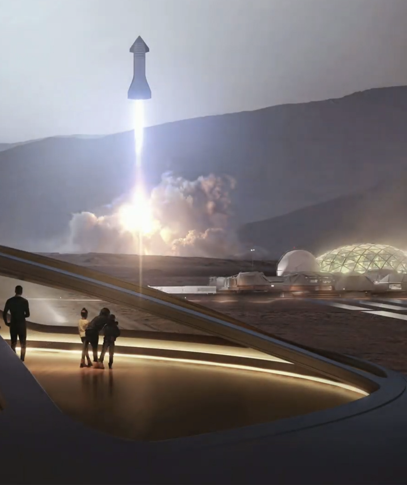
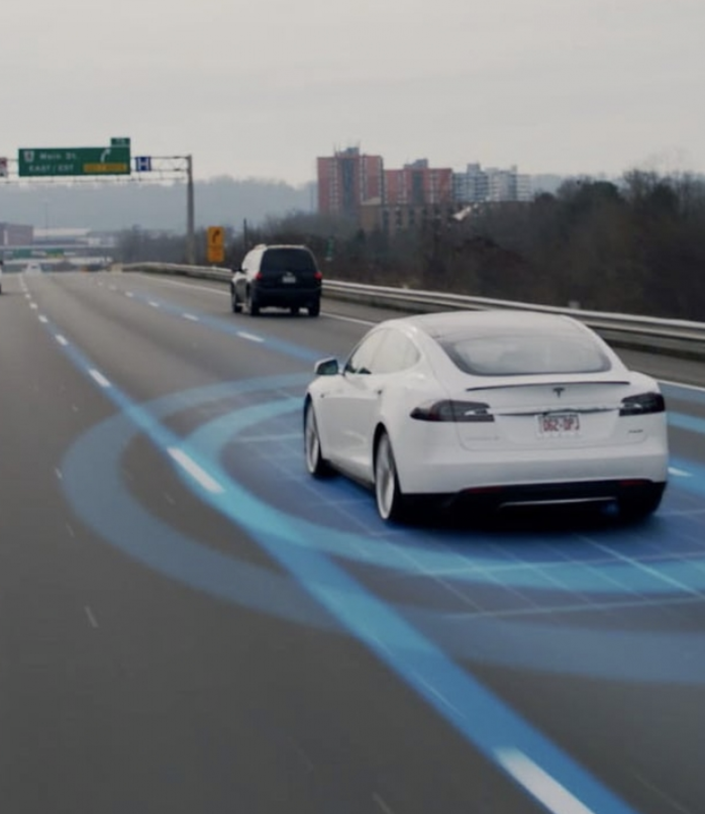
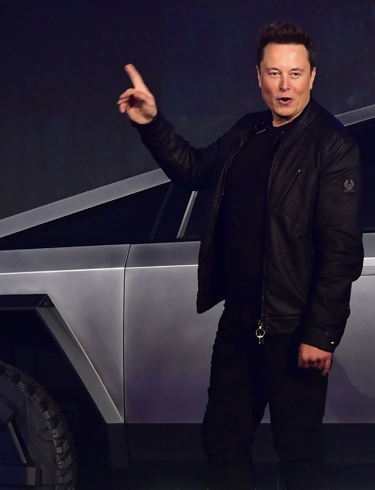

Recent News




Elon Musk is the co-founder and CEO at Tesla, overseeing all product design, engineering and manufacturing of the company's electric vehicles, battery products, and Solar Roofs.
Elon is also the co-founder, CEO and lead designer of Space Exploration Technologies (SpaceX), where he oversees the development and manufacturing of advanced rockets and spacecraft for missions to and beyond Earth orbit, with the goal of creating a self-sustaining city on Mars. He is also CEO of Neuralink, which is developing ultra-high bandwidth brain-machine interfaces to connect the human brain to computers. Elon also founded and serves as CEO of The Boring Company, which combines fast, affordable tunneling technology with an all-electric public transportation system in order to alleviate soul-crushing urban congestion and enable high-speed long-distance travel.
Previously, Elon co-founded and sold PayPal, the world's leading Internet payment system, and Zip2, one of the first internet maps and directions services, which helped bring major publishers like the New York Times and Hearst online.